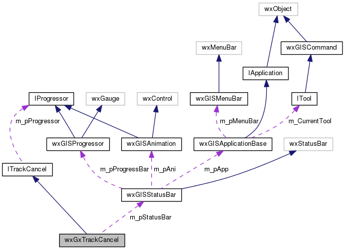

|
|
Version: 0.6.0 |


wxGxTrackCancel Class Reference
Inheritance diagram for wxGxTrackCancel:

Collaboration diagram for wxGxTrackCancel:

Public Member Functions | |
| wxGxTrackCancel (wxGISStatusBar *pStatusBar) | |
| virtual void | PutMessage (const wxString &sMessage, size_t nIndex, wxGISEnumMessageType eType) |
 Public Member Functions inherited from ITrackCancel Public Member Functions inherited from ITrackCancel | |
| ITrackCancel (void) | |
| A constructor. | |
| virtual | ~ITrackCancel (void) |
| A destructor. | |
| virtual void | Cancel (void) |
| virtual bool | Continue (void) |
| virtual void | Reset (void) |
| virtual IProgressor *const | GetProgressor (void) |
| virtual void | SetProgressor (IProgressor *pProgressor) |
| virtual wxString | GetLastMessage (void) |
Protected Attributes | |
| wxGISStatusBar * | m_pStatusBar |
| Protected Attributes inherited from ITrackCancel | |
| bool | m_bIsCanceled |
| IProgressor * | m_pProgressor |
The documentation for this class was generated from the following file:
- /home/bishop/work/projects/nextgismanager/include/wxgis/catalogui/gxmapview.h
- Generated on Fri Sep 26 2014 01:11:05 for ngm by
 1.8.6
1.8.6